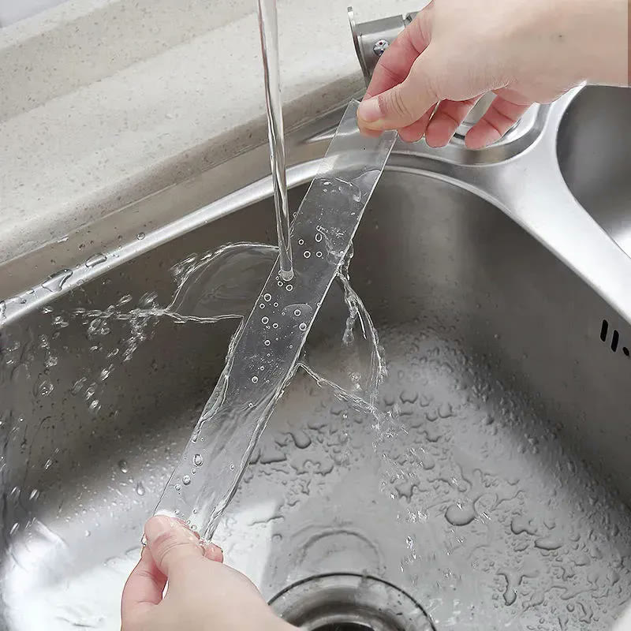
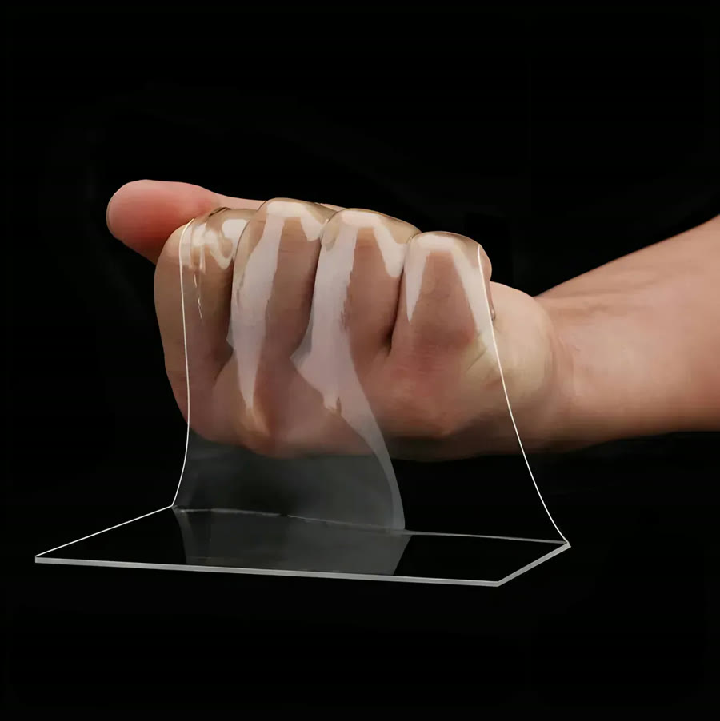
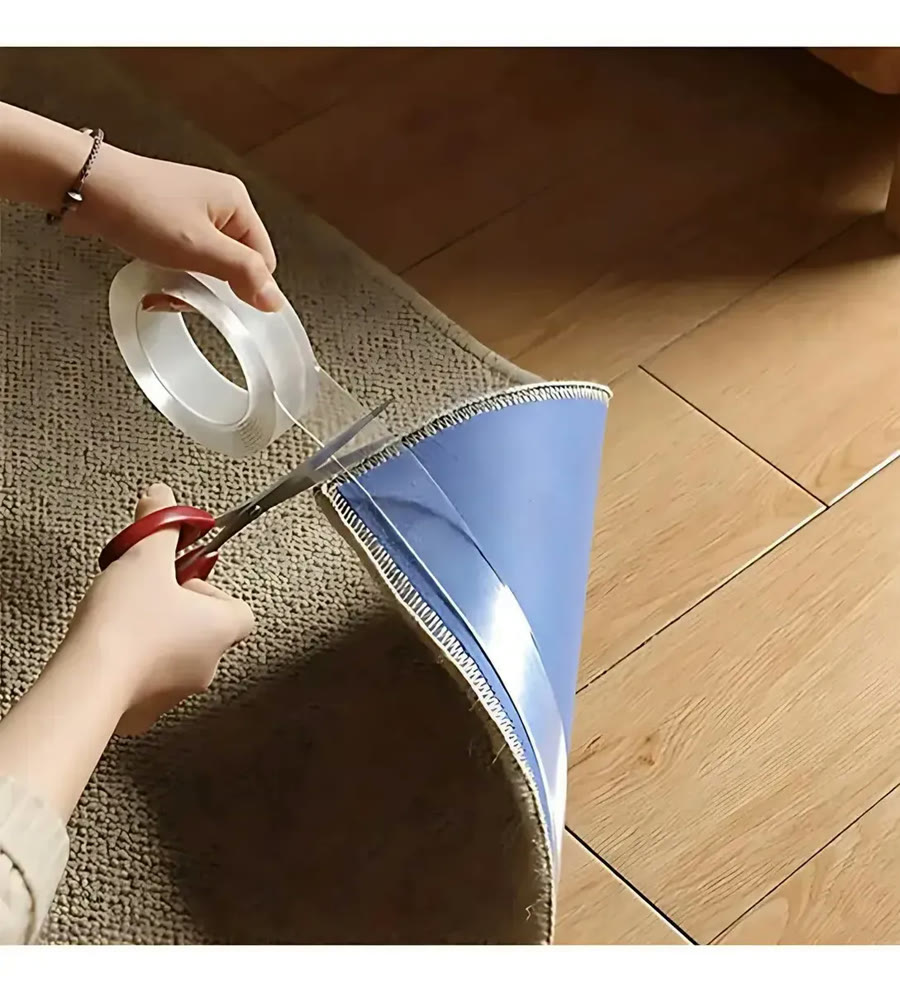
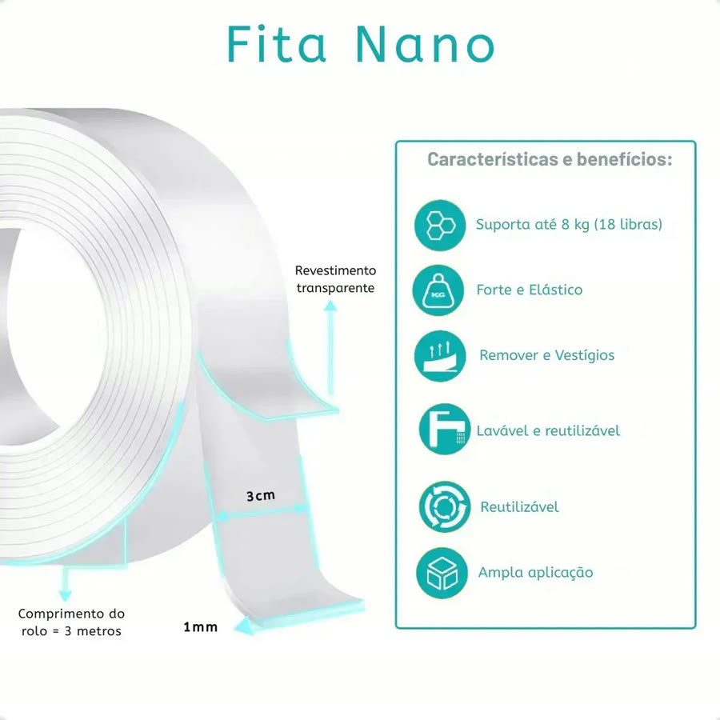
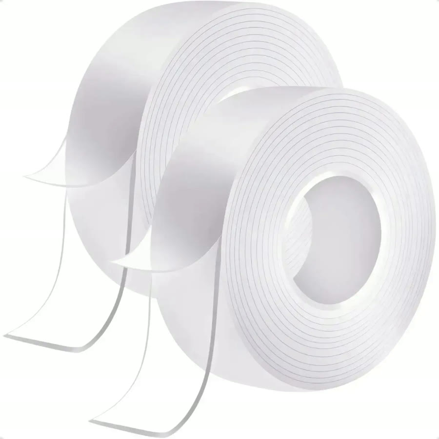

Achado nº 117
Furando a parede pra prender filtro de linha?
Fita dupla face transparente nano, kit 2 rolos de 3 m
★ 4,7 · mais de 2 mil avaliações no Mercado Livre






O que diz a página oficial do produto
- É um kit com 2 rolos de fita dupla face transparente, cada um com 3 metros por 3 cm e 1 mm de espessura
- Segundo o anúncio, é de gel acrílico e cola em azulejo, madeira, plástico, metal, vidro e parede pintada
- Segundo o anúncio, prende tapete e objetos sem furar a parede
- Segundo o anúncio, quando perde a cola, pode ser lavada e volta a colar
- Segundo o anúncio, sai sem deixar marca e pode ser reutilizada
- Segundo o anúncio, aguenta até 8 kg
- A temperatura máxima indicada é 50 °C
- No Mercado Livre, tem nota 4,7 com mais de 2 mil avaliações e mais de mil vendidos
Link de afiliado: se você comprar por ele, a Achadaria pode receber uma comissão, sem custo extra para você. Preço, estoque e entrega são da loja e podem mudar; confira lá antes de comprar.